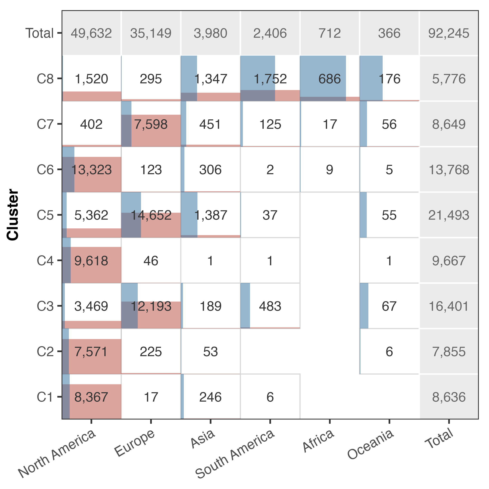
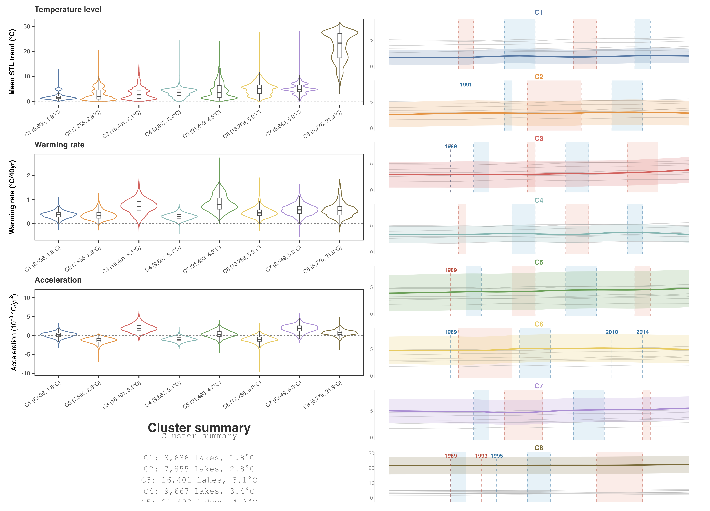
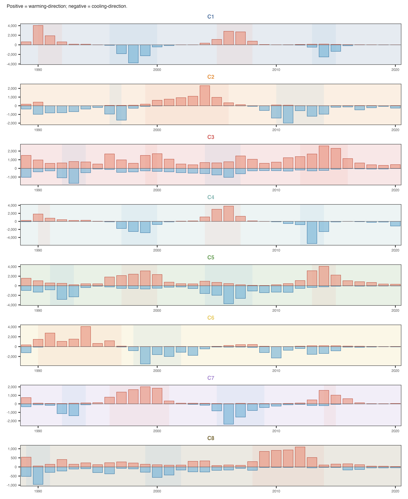

Regional decomposition
Continental overview
| Continent | n | Warming | Accel | Warming % | Accel % |
|---|---|---|---|---|---|
| North America | 49,589 | 0.59 ± 0.64 | -0.53 ± 1.19 | 83.4% | 28.6% |
| Europe | 35,140 | 0.98 ± 0.87 | 1.38 ± 1.21 | 88.0% | 86.8% |
| Asia | 3,980 | 0.59 ± 0.54 | 0.58 ± 0.98 | 89.9% | 71.9% |
| South America | 2,406 | 0.39 ± 0.26 | 0.91 ± 0.53 | 92.6% | 96.4% |
| Africa | 712 | 0.50 ± 0.27 | 0.27 ± 0.64 | 99.9% | 66.6% |
| Oceania | 366 | 0.57 ± 0.29 | 0.77 ± 1.00 | 94.3% | 73.8% |
Warming is raw annual Sen warming in °C / 40 yr. Accel is Sen acceleration of STL trend first difference in 10-3 °C / yr2.
NoteFinding 10
North America is the only continent with negative mean acceleration (-0.53 × 10-3 °C / yr2), meaning most lakes there are warming but decelerating. Europe has the strongest acceleration (+1.38).
Continental labels are convenient for description but do not correspond to natural units of climate response. A lake in southern North America may share more with a lake in northern South America than with a lake in northern Canada. We therefore move from continental description to climate-based classification.
Temporal response types
We classify lakes by the shape of their 40-year STL trend, combined with their mean temperature. Each lake’s annual STL trend is z-scored to remove mean and scale, then combined with the normalised mean STL temperature. The resulting feature vector is classified by \(k\)-means clustering (\(K = 8\)).
The clusters describe temporal response types: lakes with similar warming trajectories and temperature regimes are grouped together regardless of continental labels.
NoteFinding 11
Eight temporal response types are identified. Most clusters are geographically coherent and physically interpretable: cold northwestern North America (C3, C7), eastern North America (C6), warm and cold European regimes (C2, C8), and a tropical belt (C4).
Cluster descriptions
C1: Cold high-latitude North America. This is the coldest cluster, with a mean STL trend of 1.8 °C. Warming is moderate (+0.36 °C / 40 yr, 99% positive) and acceleration is weakly positive (+0.13 × 10-3 °C / yr2, 60% positive). It is concentrated in northern North America (97%) with high spatial coherence (Moran’s I = 0.65). Regime-shift peaks occur in 1990–91 and 2006 (warming), and 1997–99 (cooling).
C2: Decelerating high-latitude North America. Mean temperature is 2.8 °C. Warming is moderate (+0.35 °C / 40 yr, 99% positive), but acceleration is strongly negative (-1.33 × 10-3 °C / yr2, only 1% positive), meaning most lakes in this cluster are warming but decelerating. It is concentrated in northern North America (96%) with Moran’s I = 0.70. Regime-shift peaks occur in 2003–05 (warming), 1997 (cooling), and 2010–12 (cooling).
C3: Strongly accelerating Europe. Mean temperature is 3.1 °C. Warming is strong (+0.71 °C / 40 yr, 99% positive), and acceleration is the highest among all clusters (+1.98 × 10-3 °C / yr2, 98% positive). It is dominated by Europe (74%) with Moran’s I = 0.65. Regime-shift peaks occur in 1989 and 2013–15 (warming), and 1989–93 and 2006 (cooling).
C4: Cold decelerating North America. Mean temperature is 3.4 °C. Warming is weak (+0.29 °C / 40 yr, 99% positive), and acceleration is strongly negative (-1.02 × 10-3 °C / yr2, only 5% positive). It is the most spatially coherent cluster (Moran’s I = 0.93), concentrated almost entirely in North America (99%). Regime-shift peaks occur in 2005–07 (warming), 1998 (cooling), and 2013–14 (cooling).
C5: Warming Europe. This is the largest cluster (21,493 lakes). Mean temperature is 4.3 °C. Warming is strong (+0.84 °C / 40 yr, 100% positive), and acceleration is weakly positive (+0.37 × 10-3 °C / yr2, 65% positive). It is dominated by Europe (68%) with Moran’s I = 0.61. Regime-shift peaks occur in 1998–99 and 2013–14 (warming), and 1992 and 2005–07 (cooling).
C6: Decelerating eastern North America. Mean temperature is 5.0 °C. Warming is moderate (+0.46 °C / 40 yr, 100% positive), but acceleration is strongly negative (-1.02 × 10-3 °C / yr2, only 12% positive). It is concentrated in North America (97%) with Moran’s I = 0.80. Regime-shift peaks occur in 1992–95 (warming) and 1999–02 (cooling).
C7: Strongly accelerating Europe. Mean temperature is 5.0 °C. Warming is moderate (+0.57 °C / 40 yr, 99% positive), and acceleration is strongly positive (+1.83 × 10-3 °C / yr2, 95% positive). It is dominated by Europe (88%) with Moran’s I = 0.72. Regime-shift peaks occur in 1997–2000 (warming) and 2005–08 (cooling).
C8: Warm tropical/subtropical lakes. This is the warmest cluster (mean 21.9 °C). Warming is moderate (+0.57 °C / 40 yr, 99% positive), and acceleration is positive (+0.69 × 10-3 °C / yr2, 85% positive). It is geographically dispersed but concentrated in the subtropical latitude band (Moran’s I = 0.67). Regime-shift peaks occur in 2009–12 (warming), 1989–91 (cooling), and 2000 (cooling).
Cluster summary

| Cluster | n | Temp | Warming | Accel | Dominant | Moran’s I |
|---|---|---|---|---|---|---|
| C1 | 8,636 | 1.8 °C | +0.36 | +0.13 | NA 97% | 0.65 |
| C2 | 7,855 | 2.8 °C | +0.35 | -1.33 | NA 96% | 0.70 |
| C3 | 16,401 | 3.1 °C | +0.71 | +1.98 | EU 74% | 0.65 |
| C4 | 9,667 | 3.4 °C | +0.29 | -1.02 | NA 99% | 0.93 |
| C5 | 21,493 | 4.3 °C | +0.84 | +0.37 | EU 68% | 0.61 |
| C6 | 13,768 | 5.0 °C | +0.46 | -1.02 | NA 97% | 0.80 |
| C7 | 8,649 | 5.0 °C | +0.57 | +1.83 | EU 88% | 0.72 |
| C8 | 5,776 | 21.9 °C | +0.57 | +0.69 | SA 30% | 0.67 |
Temp is mean STL trend in °C. Warming is Sen slope of annual STL trend in °C / 40 yr. Accel is Sen slope of first-differenced STL trend in 10-3 °C / yr2. Dominant is the continent with the highest fraction of lakes.
Regime-shift timing by response type
Each cluster has its own characteristic regime-shift timing. If the clustering captures real differences in climate response, lakes within the same cluster should share similar shift-year patterns.
NoteFinding 12
Each cluster shows distinct shift-year peaks. The eight clusters differ not only in spatial pattern but also in physical characteristics. Temperature level, warming rate, acceleration, and regime-shift timing all vary systematically across clusters. STL trend shapes and shift timing are consistent within clusters and distinct between clusters.


Spatial coherence
The eight clusters exhibit different spatial coherence patterns. Some form tight geographic clusters; others form latitudinal bands spanning multiple continents.
NoteFinding 13
Five clusters (C2, C3, C5, C6, C7) form tight geographic clusters, with more than 80% of lakes within ±30° of their centroid. Two clusters (C1, C8) form latitudinal bands spanning the full longitude range at high latitudes. One cluster (C4, tropical) is globally dispersed but concentrated in the subtropical latitude band.